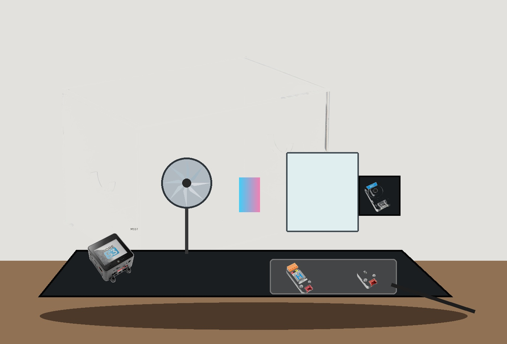

entropy c / proposed physical build
Rev A. The assembly drawing and literal-component scale mock are shown together. Neither substitutes for a CAD fit check.
1 — Dimensioned assembly drawing
Structure: cover, insert, optical path, support points, hidden electronics, and assembly order.
2 — Literal product-image mock

Scale: CoreS3, CamS3, DLight, H-bridge, and enclosure use actual product photography and verified dimensions. Mirror, dichroic tile, diffuser, insert, and brackets are placeholders because exact parts are not selected yet.
Deliberately not photorealistic: this parts collage avoids inventing unsupported mounts or altered hardware. The next realism step is CAD using selected mirror, motor, diffuser, and brackets.